日本大阪

自由行!!
11/28 環球影城 🌏🎠🎢🎡
11/28 環球影城的營業時間是
09:00 〜 21:00
通常會提早開園
提早進去 馬力歐是不用券的
所以我們可以提早去
差不多可以 8:00 到
或8:30
幾點起床呢 ??
7:00起床
可以在搭車前吃個便利商店的早餐
不餓的人可以到環球再吃
7:30搭車
搭車路線
因為沒有直達車
加上不確定有沒有車
所以從新大阪站到環球影城的方式有兩種
(搭車時間約30分鐘)
第 1 種方式 (轉車兩次)


- 從新大阪站搭地鐵到大阪站
轉乘第一次
- 從大阪站搭JR環狀線到西九條站
轉乘第二次
- 從西九條站搭JR櫻島線(夢咲線)到環球影城
以下是搭車的更多圖示

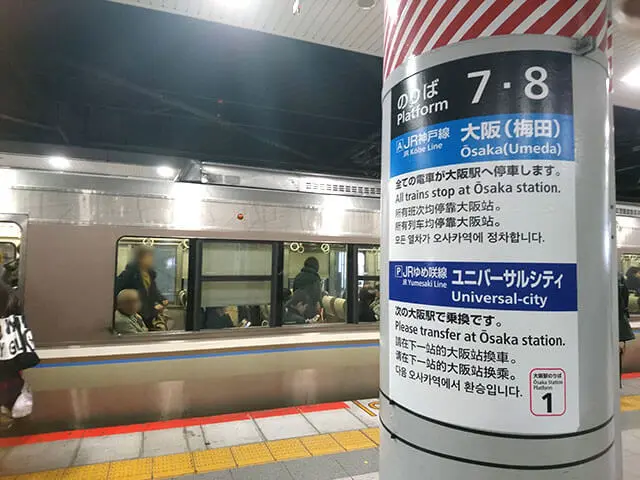
▲ 從新大阪站到大阪搭 JR西日本 淺藍色A號線
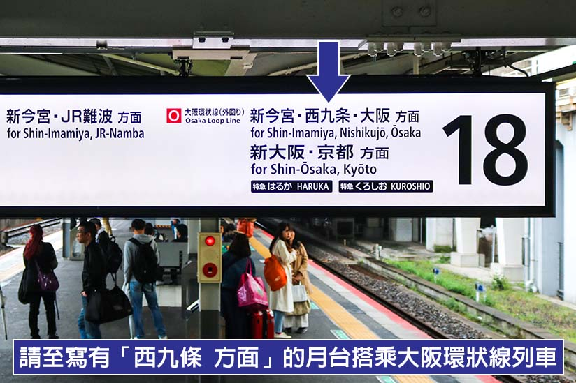
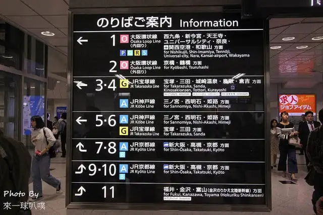
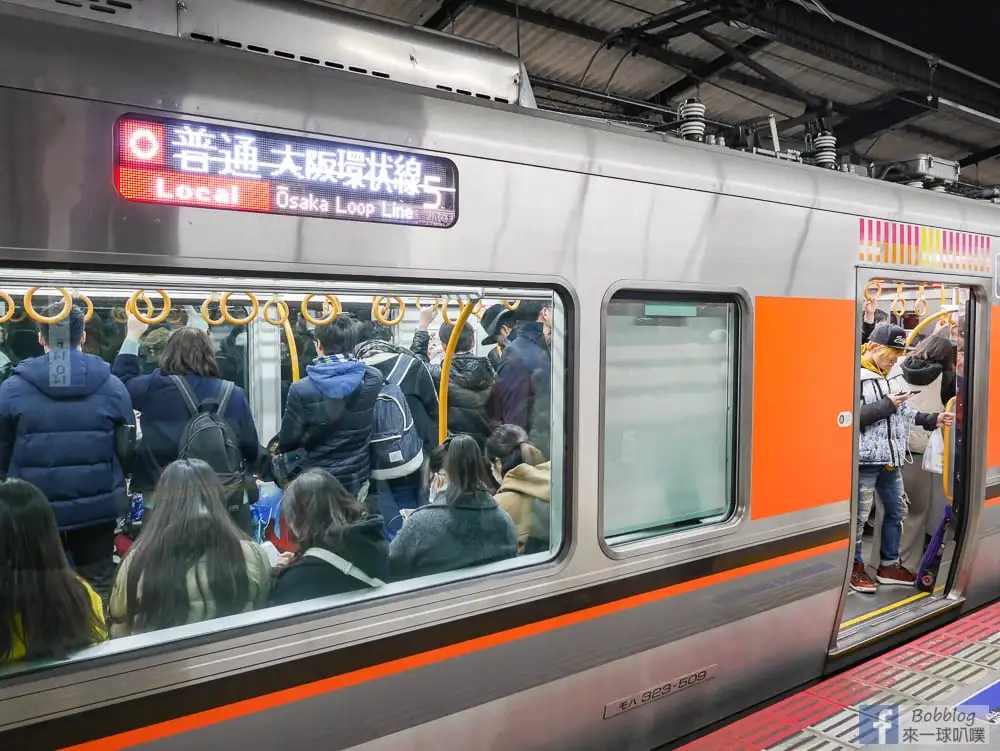
▲ 從大阪站到西九條搭 JR西日本 紅色O號線
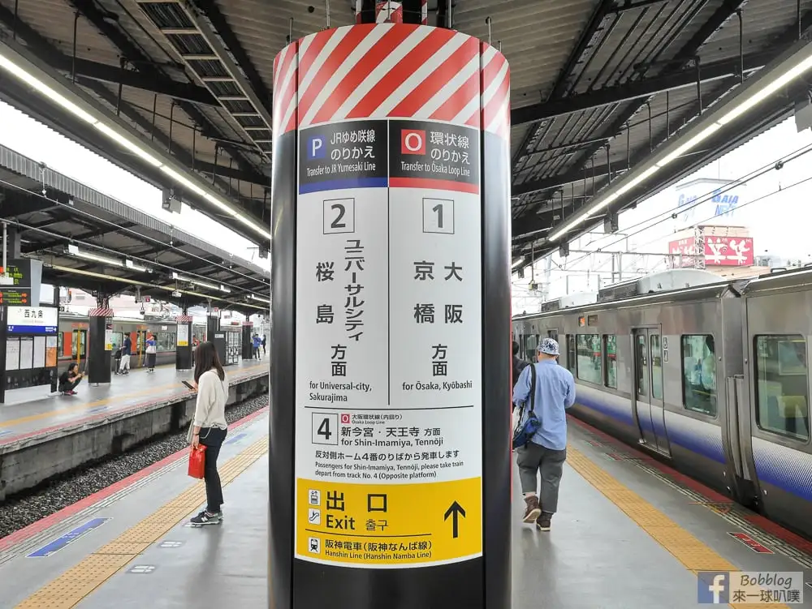
▲ 抵達西九條站 轉車搭深藍色P線(下車的隔壁)
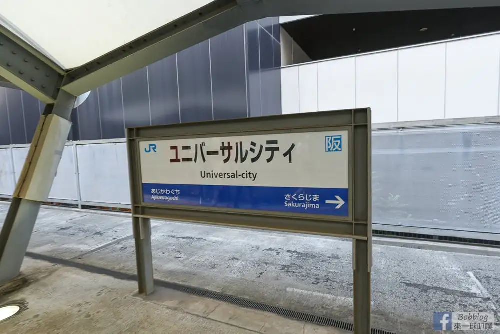
▲ 抵達還球城站 還球城站是日文 小心別搭過頭啦
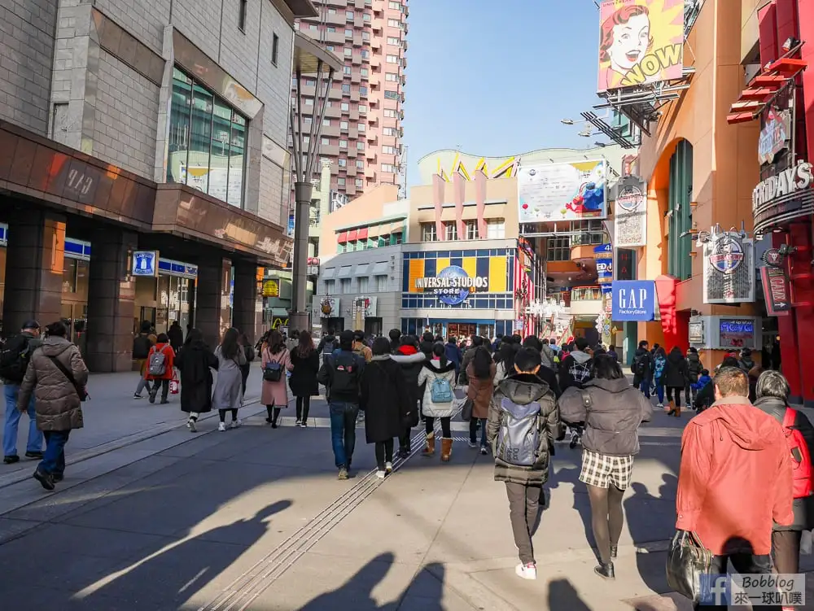
▲ 走路約5分鐘就抵達環球影城啦!!
是不是超簡單呢~~
第 2 種方式 (轉車一次)
這是睡過頭的備用方案
因為八點過後才有從大阪站到環球的直達車
(但是還是要從新大阪站搭到大阪站)


- 從新大阪站搭地鐵到大阪站
轉乘第一次
- 從大阪站搭JR環狀線到環球站
以下是搭車的更多圖示
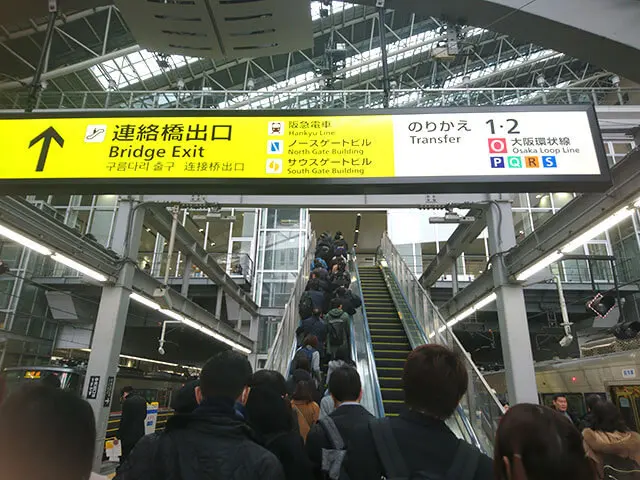
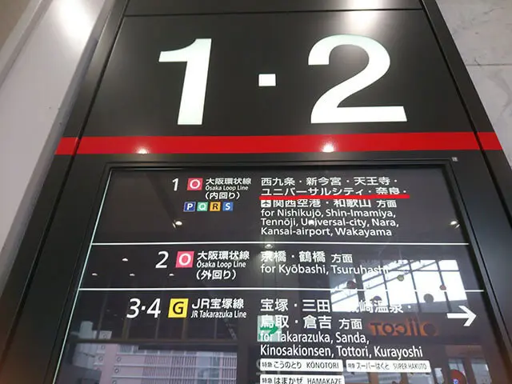
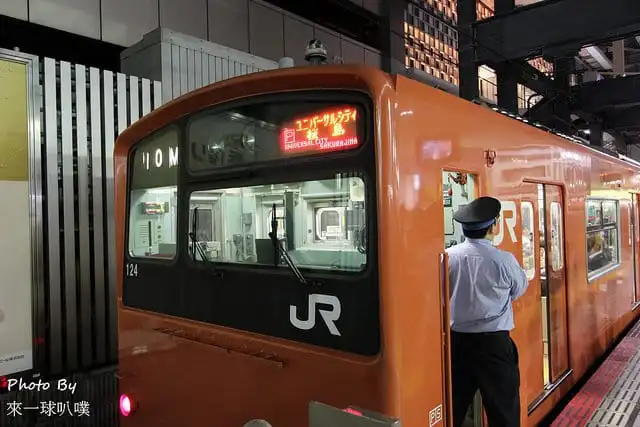
基本上與上面方式相同 先搭車到大阪站
唯一不同的是 : 在大阪站搭環狀線時
車頭的位置會寫可以直接到還球城站(日文)的直達車
然後就是
Do Ra Mi So~

就會抵達環球影城啦!!!
該怎麼玩??
如果有提早入園
第一件事就是直接去超級任天堂世界!
但是如果沒有提早的話
第一件事就是先抽整理券
(交給將BO處理)
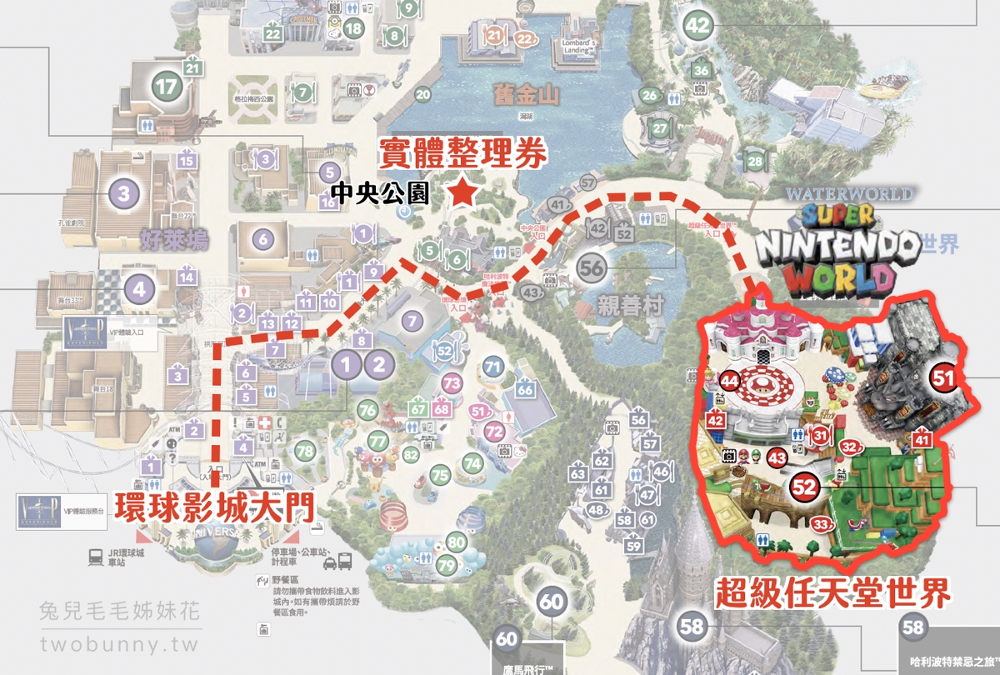
▲ 從大門前往超級任天堂世界的路
我們這團主打
能不排隊就不排
要排隊的我們就先不玩 !
注意事項 !
- 錢跟護照要收好 !!
- 進到任天堂世界要預約--奇諾比奧的咖啡店
- 設施優先玩排隊時間少的
退稅
在USJ消費是可以退稅的
但有幾點須注意
- 【不可退稅】 所有當時立即消費掉的物品
比如食物、門票之類都是不能退稅的
- 退稅金額加起來有5500日元就可以退稅
- 在USJ退稅需要33%的手續費
甚麼概念??
一般商場的退稅手續費大約在1.55%左右
- 退稅需要戴上護照 & 收據
以上 要退稅的小賤賤們 請自行斟酌
結束USJ
結束的時間依現場狀況
之後的行程也是再另行安排


 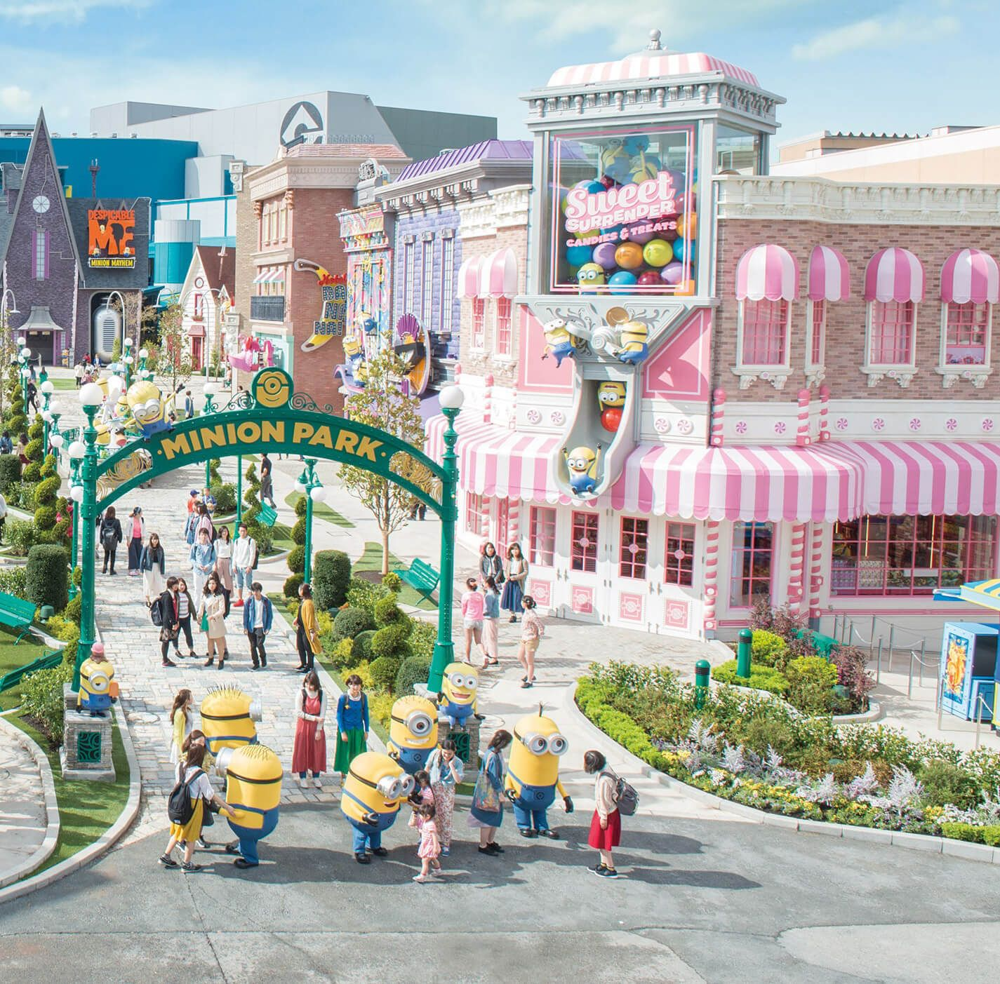
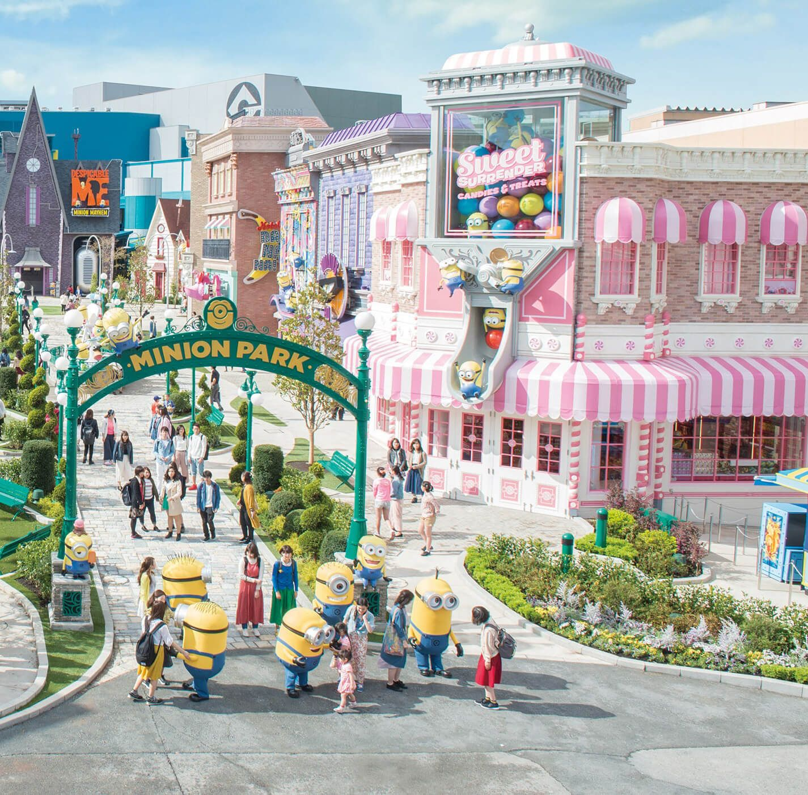